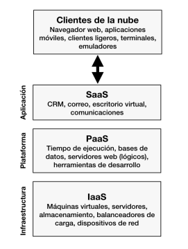

Modelos Como Servicio
La computación en la nube basa su arquitectura haciendo una separación entre
infraestructura, plataforma y aplicaciones
Los modelos de servicio más conocidos son:

SaaS (Software as a Service)
La capacidad proporcionada al consumidor consiste en utilizar las aplicaciones del
proveedor que se ejecutan en una infraestructura de computación en la nube. Las
aplicaciones son accesibles desde varios dispositivos cliente a través de una
interfaz de cliente ligero, como un navegador web (por ejemplo, correo electrónico
basado en web) o una interfaz de programa.
PaaS (Platform as a Service):
Este modelo de servicio proporciona al consumidor la posibilidad de desplegar en
la infraestructura de nube aplicaciones creadas por el mismo consumidor (o
adquiridas a un tercero) utilizando lenguajes de programación, bibliotecas, servicios
y herramientas soportadas por el proveedor de nube.
IaaS (Infrastructure as a Service):
Este modelo de servicio proporciona al consumidor de nube, capacidades de
procesamiento, almacenamiento, redes y otros recursos de computación
fundamentales donde el consumidor es capaz de desplegar y ejecutar software
arbitrario, que puede incluir sistemas operativos y aplicaciones.